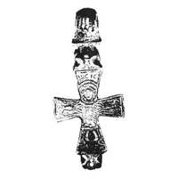
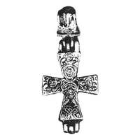

Catalog › CE-0260 · KOR2003-I.2.20
Cruce-encolpion de argint cu Răstignire pe față și Maica Domnului cu Emanuel pe revers, aurire și niello
sec. mijlocul X–primul sfert XI (901–1100) · Uglici, regiunea Iaroslavl, Rusia · Ermitajul de Stat (GE), Sankt Petersburg, secția de istorie a culturii ruse (OIRK), fond de materiale arheologice, inv. 20У, № 189
double-sided reliquary cross (enkolpion), argint; c. mijlocul X–primul sfert XI (901–1100); found at Uglici, regiunea Iaroslavl, Rusia; kept at Ermitajul de Stat (GE), Sankt Petersburg, secția de istorie a culturii ruse (OIRK), fond de materiale arheologice.




Identificare
- Categorie
- Encolpion bivalv (relicvar)
- Material
- Argint
- Tehnică
- Turnare în relief; Gravare (incizie); Aurire; Niello
- Dimensiuni
- Î 51 × L 24 × Gr 7 mm
Iconografie
- Avers
- Răstignirea (Hristos în colobium)
- Descriere avers
- Valvă de față: Răstignirea. Imaginea este executată în relief jos, în tehnica turnării, cu retușarea detaliilor cu dalta. Compoziția este încadrată într-un contur subțire pe perimetrul valvei. Hristos este reprezentat frontal, într-un colobium scurt, mai sus de genunchi, împărțit prin solzi ornamentali mari și neregulați; tivul colobiumului este marcat printr-o linie în relief. Pe corp, de ambele părți, câte două benzi verticale cu crestături oblice; pe umeri câte două triunghiuri înscrise unul în altul. Pe brațele larg desfăcute, la coate și la încheieturi, sunt prelucrate în relief jos benzi verticale late care înfățișează frânghiile cu care Răstignitul este legat de cruce; degetele mari ale mâinilor sunt depărtate. Faldurile veșmântului atârnă pe laturi mai jos de genunchi și se contopesc cu linia de contur care încadrează întreaga compoziție. Picioarele, ușor depărtate și îndoite în afară la genunchi, sunt tratate ca două benzi înguste; labele masive ale picioarelor sunt întoarse în direcții opuse. Porțiunea adâncită a valvei în jurul labelor picioarelor este umplută cu niello. Deasupra capului lui Hristos tăbliță în formă de dreptunghi cu literele XC IC. Chipul Răstignitului, în nimb cruciform tăiat de marginile stâlpului vertical al crucii, este rotund, cu ochii și nasul în relief, gura sub forma unui mic oval în relief. Balamalele valvei de față sunt acoperite cu doi trifoi stilizați sau crini.
- Revers
- Maica Domnului cu Pruncul; Neidentificat
- Descriere revers
- Valvă de revers: Maica Domnului, Hristos Emanuel, sfinți aleși. Compoziția este încadrată într-un contur subțire pe perimetrul valvei. În centru, pe traversa verticală a crucii, Maica Domnului în picioare, în fața ei așezat Emanuel, cu genunchii larg desfăcuți, binecuvântând cu două degete cu dreapta; capul lui Emanuel, în nimb larg rotund, se află la nivelul pieptului Mariei; labele picioarelor Maicii Domnului sunt arătate de ambele părți ale figurii lui Emanuel. Maica Domnului și Pruncul sunt reprezentați în relief jos, în veșminte lungi, la redarea cărora adânciturile din metal sunt umplute cu niello. Umerii Maicii Domnului sunt tratați cu două linii rotunjite line. Chipul rotund al Maicii Domnului, cu ochii, nasul și gura în relief, este bine prelucrat în relief jos; chipul lui Emanuel în nimb cruciform mare este deteriorat de patină. Chipul sfântului reprezentat deasupra capului Maicii Domnului este înconjurat de un nimb larg, de asemenea cu ochii în relief, sprâncene în formă de T, nas și gură în relief; veșmântul este tratat sub forma unui dreptunghi cu rețea (platoșă cu solzi?). Chipurile sfinților de pe traversa orizontală, în nimburi largi rotunde, au aceleași particularități iconografice, cu mâinile ridicate spre Maica Domnului. Alături de ei, pe traversă, hașuri umplute cu niello care imită literele unor inscripții necitibile.
- Inscripții
- XC IC
- Limba
- Greacă
Datare și atribuire
- Datare
- sec. mijlocul X–primul sfert XI (901–1100)
- Centru
- Necunoscut
- Tipologie
- Korzukhina–Peskova 2003, tip I 2
Descoperire
- Localitate
- Uglici
- Regiune
- regiunea Iaroslavl
- Țară
- Rusia
- Context
- Fortificație
- Anul
- 2001
Păstrare și referințe
- Colecție
- Ermitajul de Stat (GE), Sankt Petersburg, secția de istorie a culturii ruse (OIRK), fond de materiale arheologice
- Nr. inventar
- 20У, № 189
- Bibliografie
- G. F. Korzukhina, A. A. Peskova, Древнерусские энколпионы. Нагрудные кресты-реликварии XI–XIII вв., Sankt-Petersburg, 2003 [Korzukhina–Peskova 2003], p. 56, cat. nr. I 2/20, reprodusă la Табл. 9 (planșe, p. 251). Bibliografie citată în sursă: Томсинский 2002, 263–267, рис. 1.
- Figura
- Табл. 9
- Planșe
- Korzukhina–Peskova 2003, Табл. 9 (planșă fără paginație proprie în PDF; p. 251 tipărită)
- Observații
- Datare după Peskova: sec. mijlocul X–primul sfert XI. Circumstanțe: Săpături S. V. Tomsinski, 2001, în kremlin, sectorul la sud de Biserica țareviciului Dimitrie „pe sânge”; sectorul 17, stratul 3, microorizontul 1 al orizontului 2, groapa nr. 40, umplutură. Dimensiuni: h 5,1 cm cu inelul de agățare. Cruce cu două valve, închisă; inelul de agățare în formă de mărgea biconică masivă cu orificiu orizontal, cu resturi de acoperire cu niello; în balamale, cuie de cupru puternic patinate. Urme slabe de aurire pe față: pe crinii care acoperă balamalele și pe nimb; pe laturile crucii și pe revers, pe chipuri și nimburi. Inițial, probabil, toată fața era acoperită cu aurire, cu liniile gravate și adânciturile umplute cu niello. Patină și mică deformare a valvelor. Autorii datează intrarea crucii în stratul cultural în limitele microorizontului 1 al orizontului 2 (dirhemi abbasizi și samanizi din 888/9, 896/7, 942/3 și altele), în prima jumătate a sec. X – primul sfert XI. Originea meșterului nu se stabilește univoc. Coordonate: nu sunt date în sursă.
Citare: Corpus Encolpiorum, CE-0260, Cruce-encolpion de argint cu Răstignire pe față și Maica Domnului cu Emanuel pe revers, aurire și niello, --root/piese/KOR2003-I.2.20/ (accesat 2026-10-17).